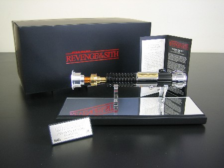
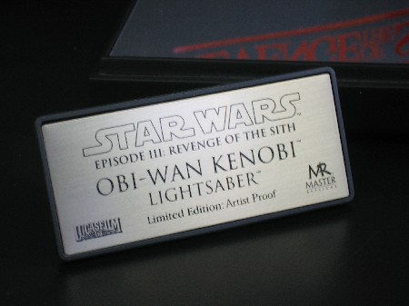

This weapon is your life.
Thanks to our friends at Master Replicas, you can know what it's like to step into the boots of a Jedi knight, and feel the force with the most elegant of weapons. They have donated a very rare Artist Proof version of their official reproduction of Obi-Wan Kenobi's lightsaber from Star Wars: Episode III - Revenge of the Sith for our Starlight Starbright Children's Foundation eBay auction.
This breathtaking replica is machined from aluminum and polished brass, with chrome plated, high gloss black, and copper painted accented parts.
(Glass display covering included, not pictured to avoid reflection)
In this climactic Star Wars movie, Obi-Wan Kenobi is armed with a new lightsaber. Since this new weapon represents the one used by Obi-Wan in Star Wars: Episode IV A New Hope, the prop department referenced available archive materials and machined a similar looking hilt in aluminum, with brass and resin details.
Taking the World War I grenade and faucet handle details of the original, they cleverly reworked them into a narrower, more streamlined design. This not only made the hilt easier to wield in the many fast and furious lightsaber fights, it allowed it to fit into the design aesthetic of the prequel trilogy while retaining the familiar profile of the original iconic prop.
To recreate the Obi-Wan Kenobi Revenge of the Sith Lightsaber, Lucasfilm provided Master Replicas with an actual filming prop for reference, enabling their engineers to exactly reproduce every detail and dimension.
A Master Replicas Artist Proof is designated by a special plaque with no release number. Rather, it has "Artist Proof" where the number would normally be. Artist Proofs are generally used internally, as gifts, for marketing and other similar things. Artist Proofs are not sold to the public.
This item comes with a custom display case, ARTIST PROOF plaque, plaque stand, and certificate of authenticity.
For additional pictures click on the following links:
Keep track of all of our announced auction items by visiting the NYLine auction page! You can also view pictures of the items up for bids at our Auction gallery. And check back often, we have plenty more items to present!
{kind=link}
{kind=link}
{kind=link}
{kind=link}
{kind=link}